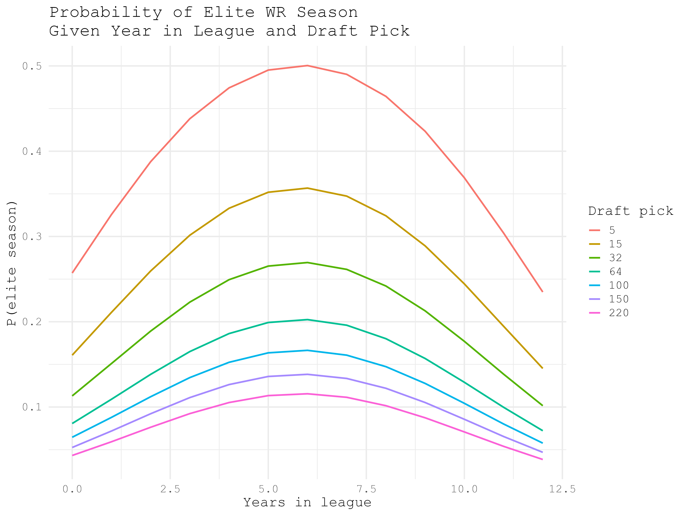
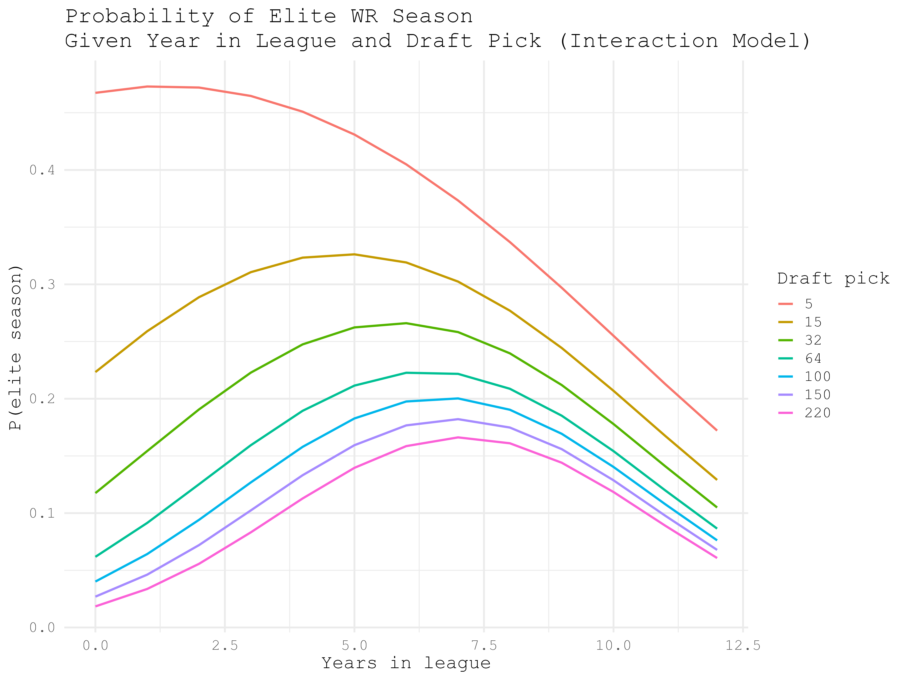
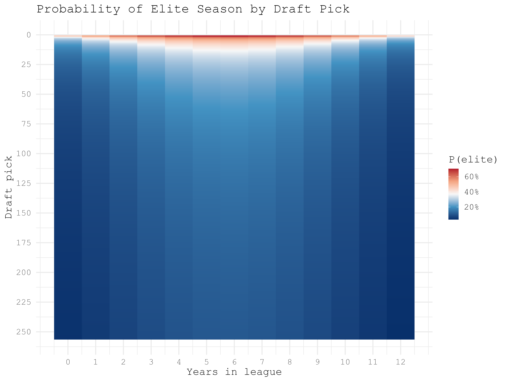
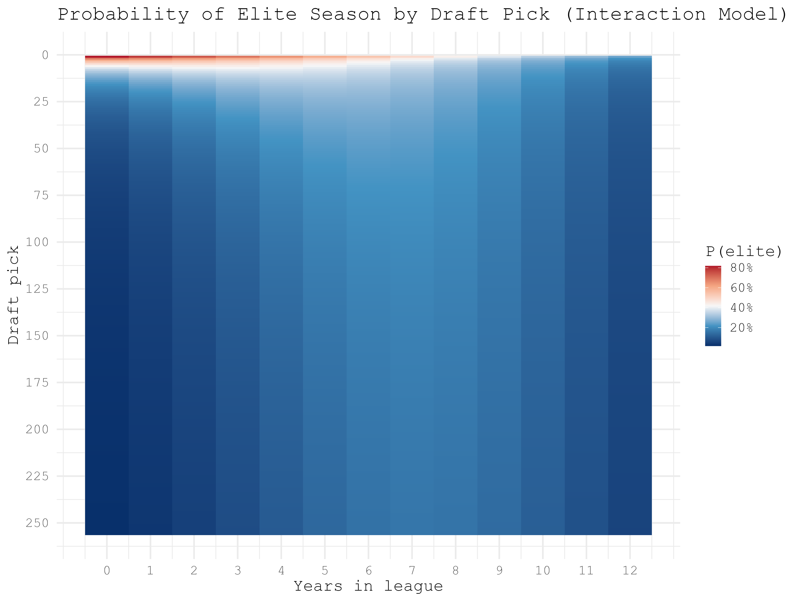
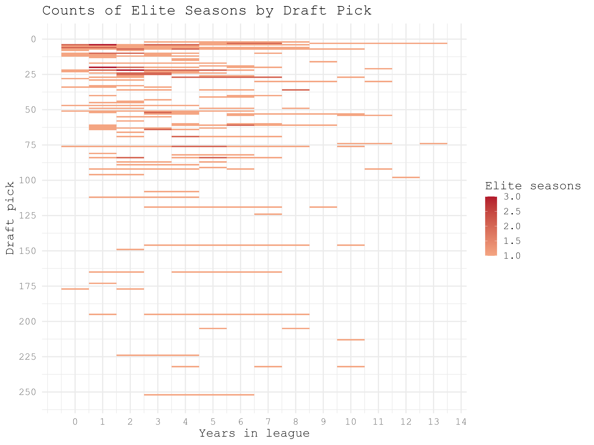

Probability Model-Building
From the previous analyses we know that mean WR years in the league, draft pick, and draft round are significantly different between elite and non-elite WRs on a season-by-season basis. Draft pick and round are essentially the same so I'll use draft pick and years in the league to make two regression models that can predict the likelihood of an elite season given career years and draft pick.
Models:
Models:
- Standard Linear Regression (no interaction between years in league and draft pick)
- Logistic Regression (interaction between years in league and draft pick)


Now I'll visualize these models more granularly with heat maps. These heatmaps show the probabilities of an elite season for each individual draft pick in each year of their career. Model 1 shows highest probabilites around the 6 year mark, model 2 shows higher probabilities earlier in the careers of high draft picks and later in the careers of lower draft picks.


I said before the model 2 makes more sense intuitively, but how does each model compare to the real raw data? Below are two side-by-side comparisons of the heatmaps for each model against the raw counts of elite WR seasons for each draft pick and career year. The raw counts generally line up better with model 2, with higher density in the top right (higher draft pick, earlier career year) of the heat map. This shows that model 2 is a better fit for this data and can be used more reliably to predict an elite season from any given WR.
